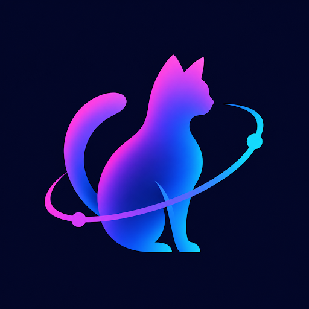

Quem somos?

Bem-Vindos(as) ao nosso
Somos o grupo GATA, grupo formado pelos integrantes Gustavo Ribeiro, Ana Laura Garcia, Tiago Movio e Ana Laura Sgamato.
Tivemos a ideia de cria um jogo, com o objetivo de aprender e gamificar o curso, para ter um aprendizado mais dinâmico e divertido.
Como Funciona?
Nosso game foi inspirado no jogo do Super-Mário.
Para jogar basta adicionar seu nome, escolher o personagem e iniciar o jogo.
A cada nível a velocidade aumenta, deixando o jogo cada vez mais difícil.
Sua pontuação é salva no ranking final que é integrado ao banco de dados feito no backend do jogo.
Você tem apenas 3 vidas, jogue com sabedoria e dispute o primeiro lugar no ranking...